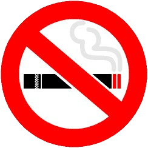

歩きタバコ（歩行喫煙・路上喫煙）禁止

台湾では歩きタバコ（歩行喫煙・路上喫煙）をする人が少なくありません。日本でも、以前は歩きタバコ（歩行喫煙）や道に立ってタバコを吸う人（路上喫煙）をよく目にしました。しかし、最近では、道でタバコを吸うことは良くない行為であると見なされるようになってきています。特に歩きタバコをする人は、不道徳な人だと思われてもしかたがありません。
日本では、歩きタバコを含む路上喫煙を禁止する条例を制定している自治体があり、歩きタバコ（路上喫煙）で罰金をとられることもあります。
路上喫煙の問題点
歩きタバコ（路上喫煙）が問題にされているのは、次のような理由からです。
- 煙による健康被害など、他人に迷惑をかける
- 吸い殻の『ポイ捨て』によって街が汚くなる
- タバコの火によって通行人が火傷をする危険がある
特に、タバコの火による火傷では、歩きタバコによって子供が失明する事故があり、路上喫煙を禁止する条例が多くの自治体で制定されるきっかけになりました。